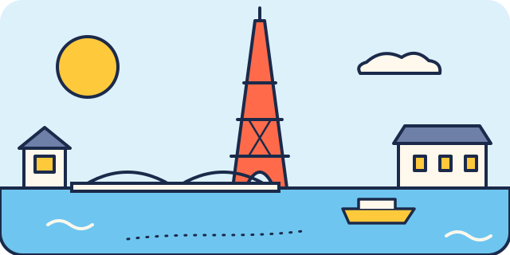

À lire avec les enfants
Paris pour les enfants
Le pays, la capitale, la langue, les premiers mots et ce qu'il faut savoir avant de partir, en phrases simples. Ces pages sont aussi dans le carnet PDF.


Le carnet de l'explorateur
Découvre Paris
Le paysLa France
La capitale de la FranceParis
On y parlele français
On paie avecl'euro (€)
Le savais-tu ?
- La tour Eiffel a été construite pour l'Exposition universelle de 1889. Elle mesure environ 330 mètres.
- Un fleuve traverse Paris : la Seine. Des dizaines de ponts permettent de passer d'une rive à l'autre.
- Le métro de Paris a ouvert en 1900. Certaines entrées sont décorées comme des fleurs en fer.
- Au Louvre, on peut voir La Joconde, le tableau le plus célèbre du monde.
- Sur Notre-Dame, des gargouilles servent à évacuer l'eau de pluie loin des murs.

Petit dictionnaire
Les mots de Paris
Ces mots, tu vas les entendre ou les voir pendant le voyage. Coche ceux que tu as rencontrés.
Une gargouilleUne statue en pierre qui crache l'eau de pluie, sur les toits des églises.
Un bouquinisteUn marchand de vieux livres, installé dans des boîtes vertes au bord de la Seine.
Une pénicheUn long bateau plat. Certains transportent des marchandises, d'autres sont des maisons.
Un bateau-moucheUn bateau qui promène les visiteurs sur la Seine.
Une fontaine WallaceUne petite fontaine verte où l'on peut boire de l'eau gratuitement.
Un arrondissementParis est découpé en 20 quartiers numérotés : les arrondissements.